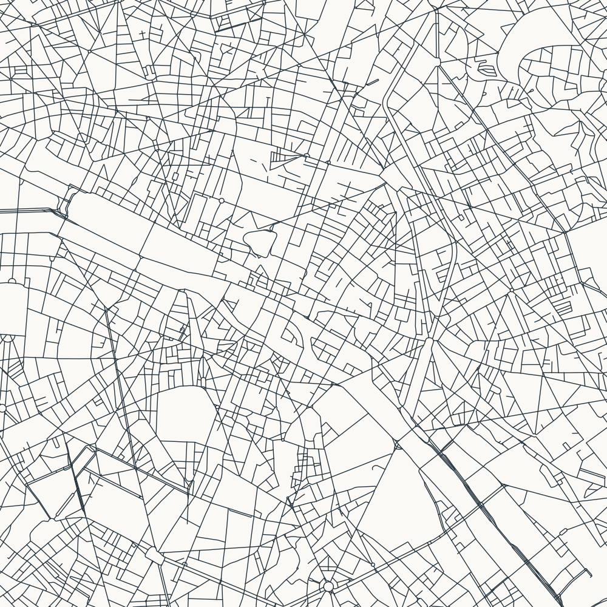
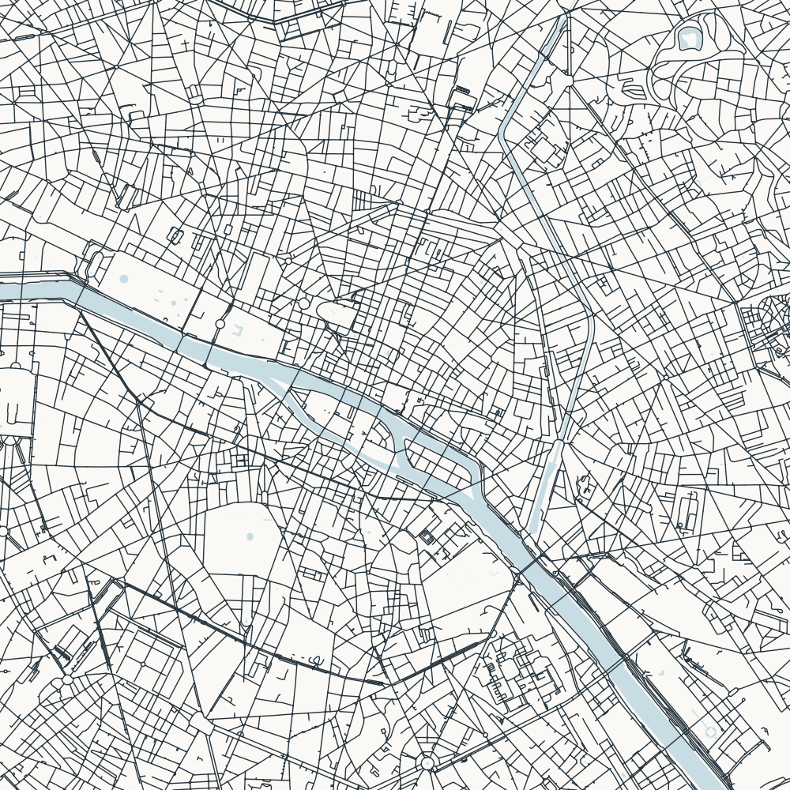
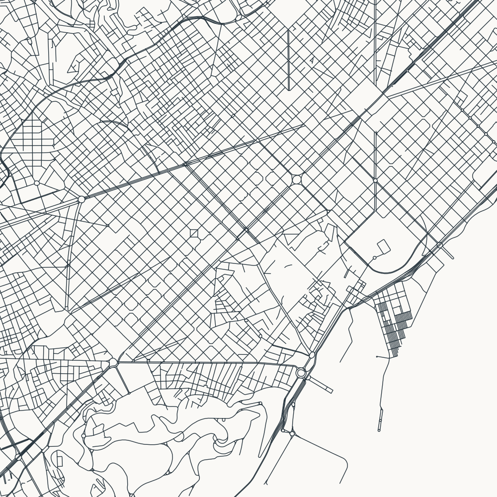

Paris



Same centre, 6 × 6 km crop, north-up orientation, and line width in every version. Click a map to inspect the full SVG.
The revised filter includes pedestrian streets and service lanes without drawing every sidewalk or path. Paris also tests a water layer: this is an additional geographic clue, so it remains optional.




Blank areas can still be parks, private land, or unmapped connections. We do not invent street connections. Barcelona has no water layer here; coastal water requires separate treatment.
© OpenStreetMap contributors · See each output folder’s manifest for settings.